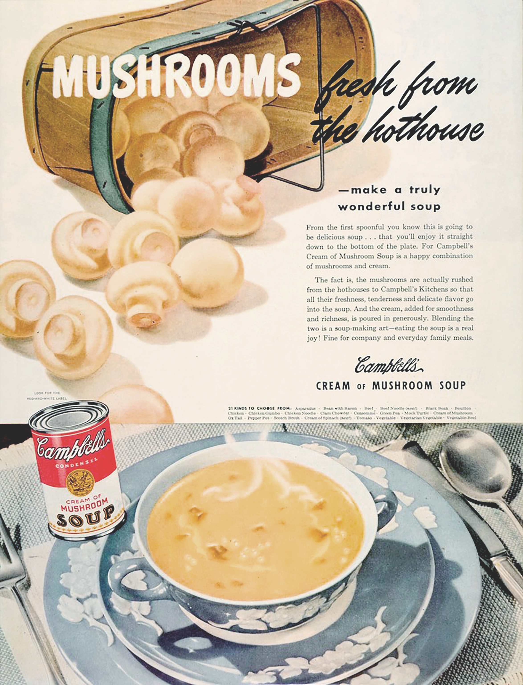

Magazines of the 1950's - 1960's
A projection of the social- political situation of the time
How does it reflect the design aesthetics of the period?
Magazines and its impact
on the
during the Post World War II period
During the post war period , magazines were the main mean of communicating, lifestyle and social ideals. The increase of “leisure time resulting from a shorter week in business and industry”, improvements in transportation, paid vacations, and so on affected the growth of the Magazine industry. It had created more time to consult and read them.
Women who had served in the labor force, went back home. Thus World War II and “the propaganda of Rosie the Riveter” inaugurally provided opportunities for women to work and participate in activities that didn’t necessarily involve their household.
As a result popular magazines were used to re-appropriate gender roles. It portrayed “the ideal women” stereotype by emphasizing the traditional concepts of femininity. It exemplified “the concept of women’s total fulfillment through their role as housewife and mother”. Women were expected to feel accomplished “only in sexual passivity, male
Magazines and Advertising were one of the primary forces behind the creation of “the ideal women” considering that it illustrated the exemplary life at home by only advertising home products, making women better domiciliary consumers. It portrayed women shopping rather than working, and projected woman in need of male recognition and appreciation.
Thereupon popular imagery was used as propaganda to acquire social control in the Post War period.
The Ideal Woman by Jennifer Holt
A
Historical Analysis of Women’s Body Image
The American Way of Life
In the 1950s, all American households read one or more magazines per week. A typical magazine included new cooking recipes , tips for cleaning the house, beauty advertisements, the latest electronic equipments, how to find a new husband or simple love stories. The focus of Advertising and Magazines was portraying “an ideal lifestyle and image” rather than the product itself. For example Campbell soup, an icon of consumerism was represented in “the April 1934 Woman’s Home Companion” by a simple drawing of a bowl of soup. In 1950 their advertisement exemplified attractive women serving their “perfect family”. The rise of the mass culture was clearly shaped by the media of the time, advertisers and particularly, by the government. Therefore individuals were unconsciously driven by their choices, preferences and ideals which reflects the power of popular imagery and how it can be used as a submissive tool in a social context like the fifties.
Furthermore, targeting women and identifying them as a household consumers erected the cultural life of the 1950’s. Consumerism changed the lifestyle and the mentality of the whole nation. “Electronic media along with household products, frozen and canned food played perhaps the largest role in this development as million of people saw the same films and the same TV series, prepared the same recipes and cleaned their houses with the same products.”
